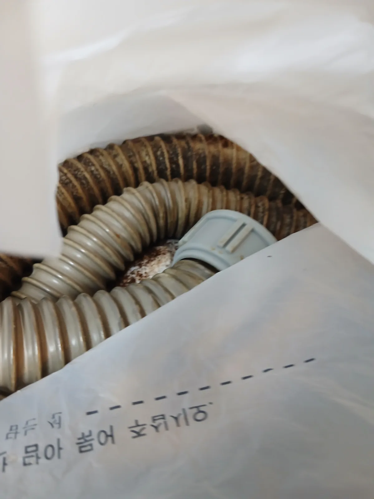

성동구 옥수동 싱크대막힘, 현장 도착 후 진단
싱크대 물이 제대로 내려가지 않는다는 요청을 접수한 뒤 배관 내시경과 샤프트 장비, 교체용 배수호스를 준비해 성동구 옥수동 아파트 현장으로 신속하게 이동했습니다.
현장에서 싱크대 물을 흘려보내자 소량의 물은 천천히 내려갔지만 사용량이 늘어나면 배수가 지연되면서 싱크볼에 물이 고였습니다. 싱크대 하부를 확인해 보니 주름 배수호스가 오랫동안 사용돼 누렇게 변색돼 있었고, 호스 표면과 연결 부위도 경화된 상태였습니다.
단순히 배수구 입구만 관통해서는 정확한 막힘 범위와 노후 상태를 판단하기 어려웠습니다. 싱크대막힘을 전문적으로 처리해 온 숙련 기술자가 배관 내시경을 투입해 내부를 확인한 결과, 배관 벽면과 바닥에 기름때와 음식물 찌꺼기, 검은 슬러지가 다량으로 쌓여 배수 통로를 좁히고 있었습니다.
신라건축설비는 일시적으로 물길만 확보하는 작업에 그치지 않고 막힘 원인과 배관 상태를 함께 확인합니다. 이번 옥수동 싱크대막힘은 노후 주름관 교체와 깊은 연결 배관의 샤프트 배관세척을 함께 진행해야 재발과 누수 위험을 줄일 수 있는 상태였습니다.
1단계: 증상 확인과 필요한 장비 작업
먼저 싱크대 하부의 노후 주름 배수호스를 안전하게 분리했습니다. 주름관은 설치와 연결이 편리하지만 내부 굴곡마다 기름 성분과 미세한 음식물 찌꺼기가 쉽게 걸립니다. 오랜 기간 세척 없이 사용하면 오염물이 층층이 쌓여 싱크대막힘과 악취의 원인이 될 수 있습니다.
분리한 주름관은 전체적으로 심하게 변색돼 있었고 재질도 유연성을 잃고 경화된 상태였습니다. 이런 배수호스는 무리하게 다시 조립하면 갈라지거나 연결 부위가 헐거워져 싱크대 하부 누수로 이어질 수 있습니다. 오염된 주름관을 단순 세척해 재사용하지 않고 규격에 맞는 새 배수호스로 교체하기로 했습니다.
주름관을 분리한 뒤 배관 내시경을 연결 배관 안쪽으로 투입했습니다. 내시경 화면에는 배관 내부에 누적된 검은 기름 슬러지와 다양한 음식물 이물질이 선명하게 확인됐습니다. 배관의 빈 공간이 크게 줄어든 상태여서 새 주름관만 연결하면 깊은 구간의 막힘이 그대로 남을 수 있었습니다.

2단계: 원인 구간 처리와 정상 작동 확인
배관 내부 상태를 확인한 뒤 리지드 플렉스샤프트를 연결 배관에 투입했습니다. 배관의 방향과 장비 반응을 살피면서 샤프트를 단계적으로 전진시키고, 회전하는 체인을 이용해 벽면에 굳은 기름때와 음식물 침전물을 분쇄하는 배관스케일링 작업을 진행했습니다.
단순 관통으로 좁은 물길 하나만 만드는 것이 아니라 샤프트를 반복적으로 전후진시키며 배관 내벽의 오염층까지 정리했습니다. 배관 내시경을 통해 확인된 깊은 구간까지 충분히 작업해 내부에 남은 슬러지와 이물질로 인해 싱크대막힘이 다시 발생하지 않도록 처리했습니다.
배관세척을 마친 뒤 새 주름 배수호스를 배관 구조에 맞게 연결했습니다. 호스가 과도하게 꺾이거나 처져 내부에 물과 찌꺼기가 다시 정체되지 않도록 연결 길이와 방향을 조정했습니다. 모든 부속을 단단히 조립한 뒤 싱크대에 충분한 양의 물을 흘려보내 배수 속도와 연결부 누수 여부를 함께 점검했습니다.

작업 결과와 재발 방지 안내
배관 내시경검사와 리지드 샤프트 배관스케일링을 통해 내부를 가득 채우고 있던 기름때와 음식물 이물질을 제거했습니다. 삭고 경화된 주름 배수호스도 새 부품으로 교체해 막힘뿐만 아니라 향후 발생할 수 있는 싱크대 하부 누수 위험까지 줄였습니다.
작업 전에는 싱크볼에 고이던 물이 배관세척 후 빠르게 내려갔으며, 많은 양의 물을 연속으로 흘려보내도 역류나 배수 지연이 나타나지 않았습니다. 새로 연결한 주름관과 부속에서도 물이 새지 않는 것을 확인하고 작업을 마무리했습니다.
싱크대 배수구에 식용유나 기름진 국물을 그대로 버리면 배관 안에서 식으면서 굳고, 여기에 밥알과 작은 음식물 찌꺼기가 달라붙어 두꺼운 오염층을 형성합니다. 기름이 많은 그릇은 키친타월로 먼저 닦고 배수 거름망을 자주 청소해야 합니다. 주름 배수호스가 딱딱하게 굳거나 변색·갈라짐·악취가 확인된다면 누수가 발생하기 전에 교체하는 것이 좋습니다.
신라건축설비는 성동구 옥수동을 비롯한 서울 전 지역과 경기권에 신속하게 출동해 싱크대막힘·변기막힘·하수구막힘을 전문적으로 해결합니다. 단순 석션과 관통 작업부터 배관 내시경검사, 리지드 샤프트 배관스케일링, 노후 배수호스 교체, 고압세척, 공용배관과 오수관 진단, 배관 보수·교체 및 대형 배관공사까지 숙련 기술자와 전문 장비를 통해 자체 대응합니다.
최종 조치: 배관 내시경검사로 기름때와 이물질이 누적된 구간을 확인한 뒤 노후 주름 배수호스를 분리해 새 호스로 교체했습니다. 이어서 리지드 플렉스샤프트를 연결 배관 깊숙이 투입해 내부 오염층을 분쇄·제거하고, 재조립 후 통수검사와 연결부 누수 점검까지 완료했습니다.
현장 방문 전 확인하는 비용과 작업 범위
신라건축설비는 현장 증상과 배관 구조를 확인한 뒤 필요한 작업과 예상 비용을 안내합니다. 단순 관통으로 해결되는지, 배관내시경·석션·고압세척 또는 추가 장비가 필요한지는 현장 상태에 따라 달라집니다. 출장비와 야간 작업비, 추가 장비 비용이 발생할 수 있는 경우 작업 전에 먼저 설명하고 동의를 받은 범위에서 진행합니다.
업체를 선택할 때 확인할 사항
무조건적인 ‘0원’ 표현보다 실제 작업 범위, 추가 비용 조건, 사용 장비와 사후 대응 기준을 확인하는 것이 중요합니다. 해결되지 않았을 때의 비용 기준과 작업 후 동일 증상 발생 시 점검 범위를 사전에 문의해두면 불필요한 분쟁을 줄일 수 있습니다.
성동구 싱크대막힘 자주 묻는 질문
싱크대 물이 천천히 내려가면 바로 점검해야 하나요?
싱크대 물이 천천히 내려가고 많은 양의 물을 사용하면 싱크볼에 물이 고이는 증상이 반복됐습니다. 싱크대 하부에서는 오래된 배수호스의 변색과 경화도 확인돼 막힘뿐만 아니라 향후 연결부 누수까지 우려되는 상태였습니다.처럼 증상이 나타나더라도 원인은 현장마다 다를 수 있습니다. 장비와 배관 구조를 확인한 뒤 필요한 작업 범위를 안내합니다.
작업 전 비용을 알 수 있나요?
작업 전 증상과 현장 여건을 확인해 예상 범위와 비용을 먼저 안내합니다. 변기 탈거, 장비 추가 투입 또는 공용배관 작업이 필요한 경우 고객 동의 없이 임의로 진행하지 않습니다.
약품으로 해결되지 않으면 어떻게 하나요?
완료 후 정상 작동을 함께 확인하고 작업 범위에 따른 사후 안내를 드립니다. 동일 증상이 반복되면 현장 기록을 기준으로 원인을 다시 점검합니다.
싱크대막힘 서울·경기 출동지역
신라건축설비는 성동구 옥수동 현장을 포함해 서울 25개 구와 경기도 31개 시·군의 배관 문제를 상담합니다. 현장 거리와 기사 배정 상황에 따라 출동 가능 여부를 먼저 안내드립니다.
서울 전 지역
강남구 · 강동구 · 강북구 · 강서구 · 관악구 · 광진구 · 구로구 · 금천구 · 노원구 · 도봉구 · 동대문구 · 동작구 · 마포구 · 서대문구 · 서초구 · 성동구 · 성북구 · 송파구 · 양천구 · 영등포구 · 용산구 · 은평구 · 종로구 · 중구 · 중랑구
경기도 주요 출동지역
수원시 · 용인시 · 고양시 · 화성시 · 성남시 · 부천시 · 남양주시 · 안산시 · 평택시 · 안양시 · 시흥시 · 파주시 · 김포시 · 의정부시 · 광주시 · 하남시 · 광명시 · 군포시 · 양주시 · 오산시 · 이천시 · 안성시 · 구리시 · 의왕시 · 포천시 · 양평군 · 여주시 · 동두천시 · 과천시 · 가평군 · 연천군